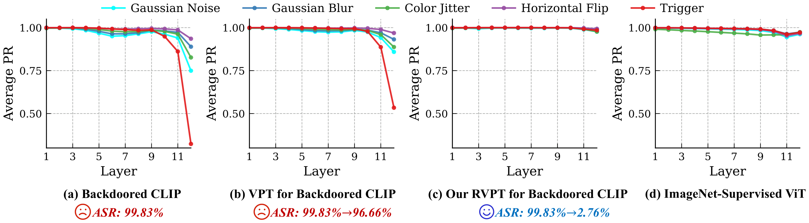
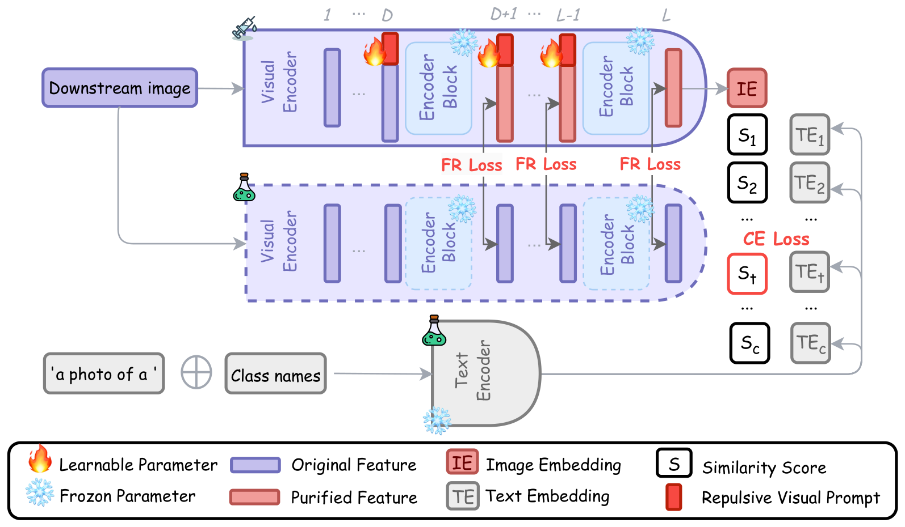
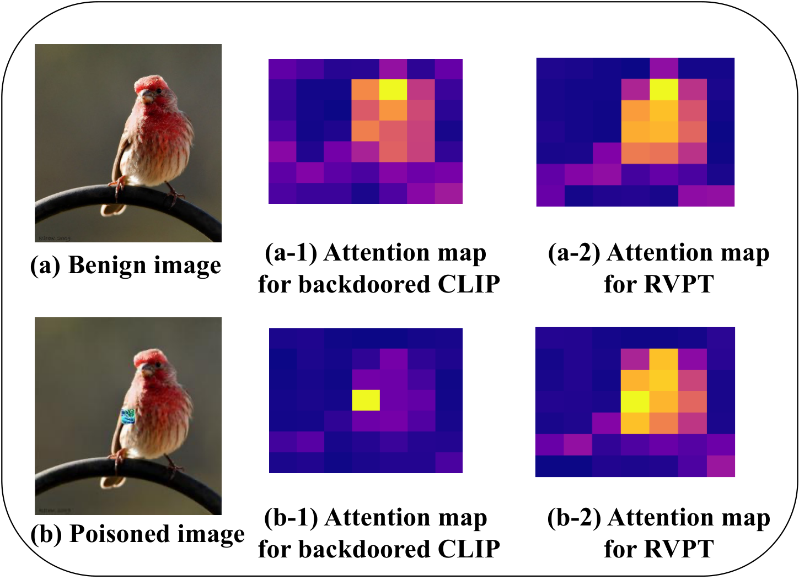
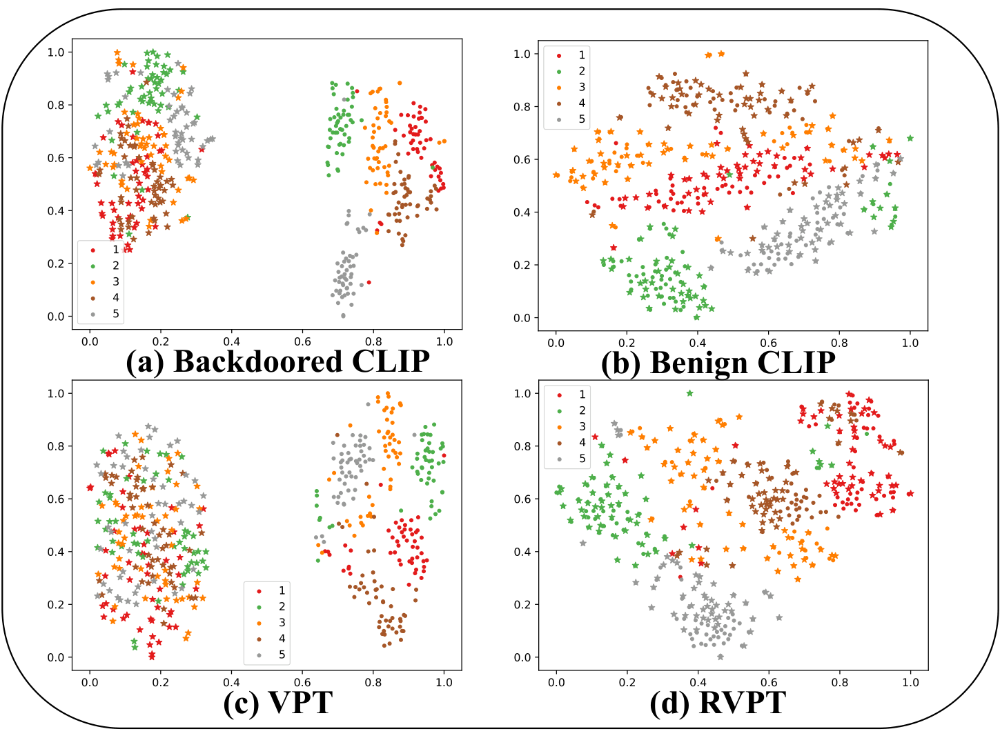
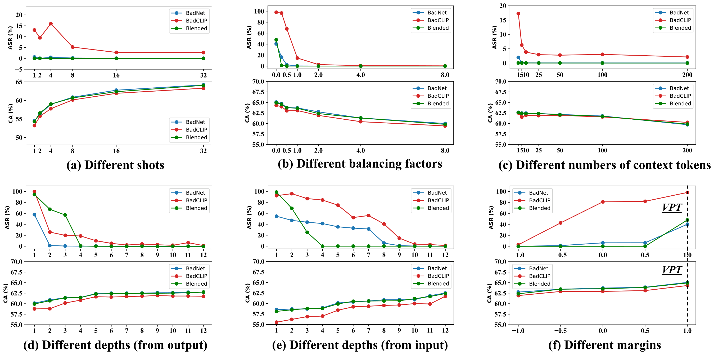

Defending Multimodal Backdoored Models by Repulsive Visual Prompt Tuning
A parameter-efficient, few-shot defense that makes backdoored CLIP ignore trigger patterns.
NeurIPS 2025
1 Southeast University, 2 University of Queensland, 3 Nanyang Technological University, 4 Zhejiang University, 5 National University of Singapore
* Corresponding author
CLIP is vulnerable to backdoors because it encodes features beyond in-dataset predictive patterns; RVPT tunes only 0.27% of CLIP's parameters with few-shot clean data, using deep visual prompts and a feature-repelling loss so that only predictive features are encoded and triggers lose their effect.
Abstract
Multimodal contrastive learning models (e.g., CLIP) can learn high-quality representations from large-scale image-text datasets, while they exhibit significant vulnerabilities to backdoor attacks, raising serious safety concerns. In this paper, we reveal that CLIP's vulnerabilities primarily stem from its tendency to encode features beyond in-dataset predictive patterns, compromising its visual feature resistivity to input perturbations. This makes its encoded features highly susceptible to being reshaped by backdoor triggers.
To address this challenge, we propose Repulsive Visual Prompt Tuning (RVPT), a novel defense approach that employs deep visual prompt tuning with a specially designed feature-repelling loss. Specifically, RVPT adversarially repels the encoded features from deeper layers while optimizing the standard cross-entropy loss, ensuring that only predictive features in downstream tasks are encoded, thereby enhancing CLIP's visual feature resistivity against input perturbations and mitigating its susceptibility to backdoor attacks. Unlike existing multimodal backdoor defense methods that typically require the availability of poisoned data or involve fine-tuning the entire model, RVPT leverages few-shot downstream clean samples and only tunes a small number of parameters.
Empirical results demonstrate that RVPT tunes only 0.27% of the parameters in CLIP, yet it significantly outperforms state-of-the-art defense methods, reducing the attack success rate from 89.70% to 2.76% against the most advanced multimodal attacks on ImageNet and effectively generalizes its defensive capabilities across multiple datasets.
Motivation: Perturbation Resistivity
A natural way to defend a backdoored CLIP with few clean samples is visual prompt tuning (VPT). However, plain VPT proves ineffective: the trigger feature cannot be extracted from clean samples, so VPT never learns to suppress it. The paper finds that CLIP's visual embeddings remain highly sensitive to small input perturbations even after VPT. To quantify this, it introduces Perturbation Resistivity (PR), the cosine similarity between the visual embedding of an image and that of its perturbed counterpart:
PR(x, δ) = cos( fv(x), fv(x + δ) )
A lower PR means larger embedding drift, i.e., greater sensitivity and higher susceptibility to backdoor triggers, since a trigger acts as a structured perturbation that can reshape visual features layer by layer.

Perturbation Resistivity across layers under Gaussian noise, Gaussian blur, color jitter, horizontal flip, and the trigger pattern, on ImageNet (higher PR = less sensitive). (a) ViT of a CLIP backdoored by the BadCLIP trigger; (b) the same model tuned with VPT; (c) tuned with RVPT; (d) a ViT trained exclusively on clean ImageNet. The deeper layers of backdoored CLIP and VPT show much lower PR than the ImageNet-supervised ViT, especially under the trigger, while RVPT restores high PR across all layers.
Key insight. CLIP's low PR originates from its large-scale, noisy pre-training data: the encoder captures many off-dataset, non-predictive features that magnify the impact of perturbations. An ImageNet-supervised ViT learns only in-dataset predictive features and is far more resistant. An effective defense should therefore suppress the irrelevant features CLIP inherently captures and guide it to focus on in-dataset predictive patterns, improving both perturbation resistivity and backdoor robustness.
Method: Repulsive Visual Prompt Tuning
Given a backdoored CLIP and a small set of clean labeled downstream samples, RVPT keeps all CLIP parameters frozen and, starting from layer D of the visual encoder, concatenates learnable repulsive visual prompts with the features of each subsequent block. The prompts are optimized with two objectives:
- Feature-repelling (FR) loss: minimizes the mean cosine similarity between the prompted class-token features and their counterparts in the original, frozen backdoored encoder, across the deeper layers.
- Cross-entropy (CE) loss: standard CLIP zero-shot-style classification with proxy captions (e.g., "a photo of a <CLS>."), which preserves clean accuracy.
ℒ = ℒCE + α · ℒFR

Illustration of RVPT. RVPT concatenates the features from later layers with tunable visual prompts while keeping the original parameters of CLIP frozen. The FR loss pushes the prompted (purified) features away from the original features layer by layer, while the CE loss keeps the prompted model accurate on the downstream task. Together, they guide the model to encode only in-dataset predictive features that contribute to CE optimization, and to ignore non-essential features such as noise or trigger patterns.
The paper interprets RVPT through the lens of natural selection: the FR loss creates a harsh environment for optimizing the CE loss, so the prompts must select only the features that are truly useful for the task. This leads to a more compact visual encoding and higher resistivity to trigger patterns. In the default setting (ViT-B/32), RVPT uses 16 clean shots per class, prompt length 50, and α = 2.
Results
CLIP is backdoored by fine-tuning OpenAI's CLIP on 500K CC3M image-text pairs (1,500 poisoned) with six attacks: BadNet, Blended, ISSBA, WaNet, TrojVQA, and BadCLIP. RVPT is compared with Linear Probe and CleanCLIP. Metrics are Attack Success Rate (ASR, lower is better) and Clean Accuracy (CA).
ImageNet-1K: ASR (↓ %), with CA (%) in parentheses
| Method | BadNet | Blended | ISSBA | WaNet | TrojVQA | BadCLIP |
|---|---|---|---|---|---|---|
| No defense | 82.69 (63.04) | 98.52 (62.64) | 60.01 (61.72) | 87.18 (62.42) | 99.75 (62.81) | 99.83 (61.33) |
| CleanCLIP | 23.79 (57.91) | 0.25 (57.69) | 15.62 (59.20) | 11.10 (59.07) | 85.64 (58.22) | 89.70 (57.55) |
| Linear Probe | 3.05 (59.64) | 5.52 (59.69) | 0.08 (59.69) | 0.65 (59.66) | – | 99.70 (59.33) |
| RVPT (ours) | 0.05 (62.76) | 0.02 (62.36) | 0.01 (61.92) | 0.03 (62.48) | 0.11 (62.63) | 2.76 (61.81) |
All attacks reach high ASR without defense. CleanCLIP reduces ASR in many cases but hurts clean accuracy and fails against BadCLIP. Linear Probe does well on the first four attacks but does not remove the trigger feature, so it performs worst against BadCLIP; it also cannot defend TrojVQA because it drops CLIP's text encoder. RVPT defends against all attacks while keeping clean accuracy, and cuts BadCLIP's ASR to 2.76%.
Caltech101 and OxfordPets: ASR (↓ %), with CA (%) in parentheses
| Method | Caltech101 | OxfordPets | ||||
|---|---|---|---|---|---|---|
| BadNet | Blended | WaNet | BadNet | Blended | WaNet | |
| No defense | 91.38 (93.06) | 92.69 (93.41) | 63.21 (92.86) | 86.83 (82.91) | 99.80 (85.10) | 87.97 (83.93) |
| CleanCLIP | 36.87 (91.18) | 1.14 (90.77) | 9.35 (91.54) | 25.72 (82.49) | 4.17 (83.41) | 12.61 (81.10) |
| Linear Probe | 1.22 (93.62) | 12.82 (93.41) | 1.04 (93.45) | 16.05 (77.74) | 2.63 (77.63) | 2.21 (77.71) |
| RVPT (ours) | 0.00 (94.02) | 0.00 (94.34) | 0.08 (93.89) | 0.30 (88.60) | 0.64 (88.87) | 1.59 (88.53) |
On Caltech101 (target class "accordion") and the fine-grained OxfordPets (target class "samoyed"), RVPT achieves the lowest ASR against every attack while also giving the highest clean accuracy among the defenses.
Downstream tasks: image captioning (IC) and text-to-image retrieval (TR)
| Model | Image Captioning | Text-to-Image Retrieval | |||
|---|---|---|---|---|---|
| ASR (↓ %) | BLEU | ASR (↓ %) | avg. Rank Ratio (%) | CA (%) | |
| Clean model | – | 7.65 | – | 95.83 | 69.34 |
| No defense | 95.12 | 6.22 | 74.67 | 9.20 | 73.24 |
| CleanCLIP | 23.03 | 4.32 | 13.33 | 25.54 | 68.95 |
| VPT | 81.21 | 4.64 | 22.67 | 26.80 | 71.88 |
| RVPT (ours) | 0 | 4.51 | 0 | 82.12 | 69.89 |
A backdoor planted in CLIP during pre-training transfers to downstream systems: LLaVA-1.5 (13B) equipped with a backdoored CLIP ViT-L/14 for MSCOCO captioning (an attack succeeds if the caption mentions the target class), and CLIP ViT-B/32 for ImageNet-1K text-to-image retrieval (an attack succeeds if the poisoned image ranks in the top-10 for target-class captions). RVPT drives ASR to 0 on both tasks while preserving clean performance, outperforming CleanCLIP and plain VPT.
The paper further shows that RVPT's defense generalizes when the target class is absent from the tuning set, when transferring from ImageNet to Caltech101/OxfordPets, and across domain shifts (ImageNet-V2/-A/-R/-Sketch). See the paper for the full tables.
Analysis
Where does the model look, and how are poisoned images embedded?

Last-layer attention maps for a benign and a poisoned image (BadCLIP attack). On clean images, RVPT focuses on the bird itself while the backdoored encoder attends to irrelevant regions. On poisoned images, the backdoored encoder concentrates on the trigger, whereas RVPT notices it without overemphasizing it.

t-SNE of clean and poisoned representations (BadCLIP attack). In backdoored CLIP and VPT, poisoned images collapse into a cluster around the trigger, ignoring the image content. RVPT breaks this cluster and restores the representations of poisoned images, much like a benign CLIP.
Ablation studies

ASR and CA under different hyperparameters against BadNet, Blended, and BadCLIP. (a) Shots: a single shot per class already brings BadNet and Blended ASR to nearly 0; BadCLIP needs about 8 shots to fall below 5%. (b) Balancing factor α: both ASR and CA decrease as α grows, and a relatively small α already gives very low ASR. (c) Context length: ASR and CA are best around 25–50 tokens; even 5 tokens (about 0.5‱ of the parameters) keep all ASRs below 5%. (d, e) Depth: prompting the later layers (counted from the output) matters most, with the best results at about six prompted layers. (f) Margin: weakening repulsion raises both ASR and CA; margin = 1 means no repulsion (plain VPT), so full repulsion is used.
Contact
For questions about the paper or code, please open an issue on the GitHub repository.
BibTeX
@inproceedings{zhang2025defending,
title = {Defending Multimodal Backdoored Models by Repulsive Visual Prompt Tuning},
author = {Zhifang Zhang and Shuo He and Haobo Wang and Bingquan Shen and Lei Feng},
booktitle = {The Thirty-ninth Annual Conference on Neural Information Processing Systems},
year = {2025},
url = {https://openreview.net/forum?id=KkONOZwvSU}
}